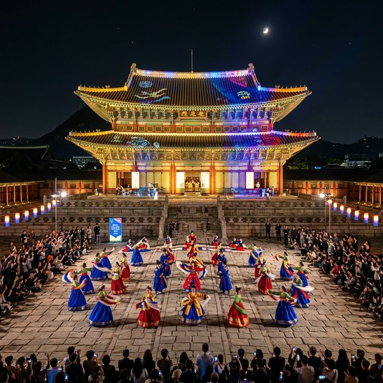
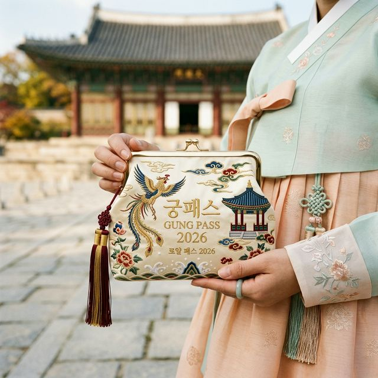
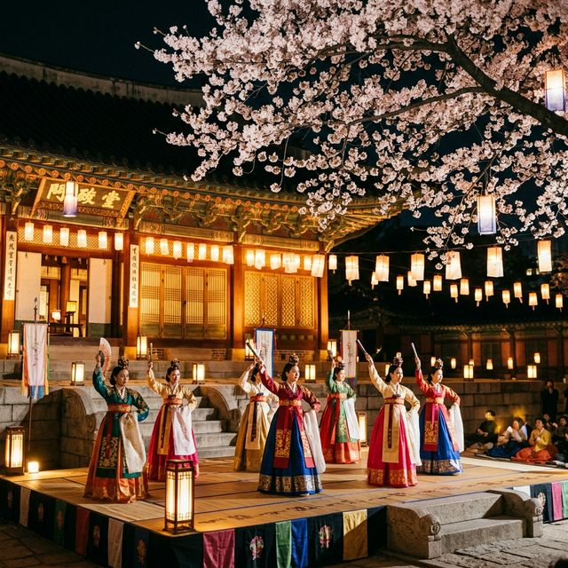

올해 궁중문화축전은 4월 24일 금요일 저녁 경복궁 흥례문 광장에서 열리는 전야제를 기점으로 막을 올립니다. 공식 축제는 4월 25일 토요일부터 어린이날 연휴가 시작되기
직전인 5월 3일 일요일까지 9일간 이어집니다. 이 기간에는 서울 도심의 5대 궁궐과 종묘, 사직단이 거대한 예술 무대로 변신합니다. 각 궁궐마다 고유의 역사적 특성에
맞춘 차별화된 프로그램이 운영되므로, 방문 전 어떤 궁을 먼저 공략할지 우선순위를 정하는 것이 중요합니다.
축전 기간 중 경복궁은 '전통과 현대의 공존'을, 창덕궁은 '왕실의 휴식과 예술'을, 덕수궁은 '근대 건축과
황실 문화'를 테마로 각각 전시와 공연을 배치했습니다. 창경궁에서는 시민들이 직접 왕실의 일상을 살아보는 체험 행사가, 경희궁에서는 가족 단위 관람객을 위한 어린이 궁중 문화 프로그램이 풍성하게
열립니다. 종묘에서는 장엄한 종묘제례악 야간 공연이 4월 28일부터 30일까지 3일간 특별 편성되어 기대를 모으고 있습니다.
매년 50만 명 이상의 내외국인이 방문하는 축제인 만큼, 주요 동선 마다 안내 요원과 다국어 팸플릿이 비치됩니다. 2026년에는 특히 스마트폰 앱을 통한 실시간 행사 안내 및 스탬프
투어 기능이 강화되어, 종이 지도 없이도 편리하게 궁궐 곳곳을 탐방할 수 있게 되었습니다. 9일간의 짧은 기간이니만큼 일정을 꼼꼼히 체크하여 봄날의 고궁 정취를 만끽하시길
바랍니다.

2026 궁중문화축전 하이라이트 — 화려한 미디어 파사드와 조명으로 재탄생한 경복궁 근정전 — AI 제작 이미지
축제의 꽃이라 불리는 유료 프로그램들은 사전 예매가 필수입니다. 2026년 기준, 주요 티켓 오픈은 축제 시작 약 3주 전인 4월 8일 정오부터 공식 예매처인
티켓링크(Ticketlink)를 통해 순차적으로 진행되었습니다. 경복궁 야간 관람, 경복궁 별빛야행, 창덕궁 달빛기행 등 인기 프로그램은 오픈과 동시에 수분 내에 마감되는
것이 일반적입니다. 예매 성공을 위해서는 티켓링크 앱 설치와 간편 결제 수단 등록을 미리 마쳐두는 철저함이 필요합니다.
만약 정식 오픈 때 티켓을 구하지 못했다면 '취소표 공략'에 희망을 걸어야 합니다. 예약일 기준 1~2일 전까지는 취소 수수료 없이 표를 내놓는 경우가 많으므로, 자정
무렵이나 축제 전날 늦은 밤에 잔여석을 확인하는 끈기가 필승 전략입니다. 또한, 외국인 전용 티켓은 크리에이트립(Creatrip) 등을 통해 별도 할당되므로 주변 외국인
친구가 있다면 이 채널을 통한 동반 예매도 고려해 볼 법한 방법입니다.
특히 올해 인기가 높은 **'K-헤리티지 패스(Gung Pass)'**는 5대 궁궐 자유 입장권과 함께 한정판 굿즈가 포함된 구성으로 큰 인기를 끌고 있습니다. 이 패스 소지자에게는 특정 공연에 대한
우선 예약권이나 현장 대기 열 면제 혜택이 주어지기도 하니, 궁궐 투어를 제대로 즐기고 싶은 마니아라면 패스 구매를 강력히 추천합니다. 불법 암표 거래는 입장 시 본인 확인 절차 강화를 통해 엄격히
차단되므로 반드시 공식 경로를 이용하시기 바랍니다.
경복궁은 축전의 메인 센터로서 가장 화려한 볼거리를 제공합니다. 흥례문 광장에서 펼쳐지는 '하이퍼 팔래스(Hyper Palace)'는 전통 무용과 최첨단 홀로그램 기술이
결합된 대형 퍼포먼스로, 조선 궁궐의 웅장함을 현대적인 감각으로 재해석한 무대입니다. 이 공연은 별도의 예약 없이도 광장에서 자유롭게 관람할 수 있어 인파가 대대적으로 몰리므로, 공연 시작 1시간
전에는 명당 자리를 확보하는 것이 요령입니다.
궁궐 내부로 들어가면 조선 시대 실제 왕실의 하루를 그대로 재현하는 '시간여행, 궁중 일상' 체험이 기다리고 있습니다. 세종대왕의 학문 연마나 영조의 소박한 수라상을
재현한 배우들의 연기는 마치 타임머신을 타고 조선 시대로 돌아간 듯한 몰입감을 줍니다. 관람객들은 상궁이나 내시 역할의 스태프들과 직접 대화를 나누며 당시의 예법이나 문화를 흥미롭게 배울 수 있어 특히
자녀 동반 가족들에게 만족도가 높습니다.
경회루 앞 호숫가에서는 정기적으로 국악 버스킹 공연이 열립니다. 물결 위로 흐르는 가야금 소리와 대금의 선율은 경복궁의 건축미와 어우러져 극강의 힐링을 선사합니다. 경회루
내부 관람은 별도의 특별 신청이 필요하지만, 밖에서 바라보는 것만으로도 충분히 아름답습니다. 경복궁의 모든 구석구석을 둘러보려면 최소 3~4시간의 여유를 가지고 방문하시길 권장합니다.

2026 궁중문화축전 한정판 굿즈 '궁패스 향낭' — 아름다운 전통 자수가 돋보이는 소장 가치 높은 아이템 — AI 제작 이미지
유네스코 세계문화유산인 창덕궁은 원형 보존이 가장 잘 된 궁궐답게 그윽한 향기를 풍깁니다. 축전 기간에는 국왕의 휴식 공간이었던 비원을 활용한 '창덕궁
달빛기행'이 운영되는데, 청사초롱을 들고 숲길을 걸으며 듣는 가야금 소리는 인생 최고의 궁궐 체험이라 단언하는 이들이 많습니다. 소수의 인원만 참여 가능한 이 프로그램은
궁중문화축전의 상징과도 같으며, 2026년에는 효명세자가 직접 창작한 춤을 재현하는 특별 공연이 동선 중간에 포함되어 예술적 가치를 더했습니다.
바로 옆 창경궁은 호수 '춘당지'와 대온실을 중심으로 몽환적인 야경을 선사합니다. 창경궁은 다른 궁에 비해 규모는 작지만, 아기자기한 매력이 넘쳐 연인들의 데이트 코스로
인기가 높습니다. 이번 축제에서는 창경궁 명정전 앞에서 국왕의 집무와 문안 인사를 재현하는 '왕과 왕비의 하루' 체험이 상시로 진행되어, 관람객들이 직접 한복을 입고
배경이 되어보는 이채로운 광경이 연출됩니다.
특히 창경궁 대온실 앞 정원에서는 전통 등 제작 체험과 밤하늘의 별을 보는 관측 행사가 열려 아이들에게 과학과 역사를 동시에 충족시켜 줍니다. 창덕궁과 창경궁 사이의 연결 통로를 이용하면 두 궁을
연속해서 관람할 수 있어 효율적입니다. 다만, 창덕궁 후원은 별도 예약제로 운영되므로 각 궁의 폐장 및 관람 시간 제한을 반드시 사전에 숙지하시기 바랍니다.
시청 광장 맞은편에 위치한 덕수궁은 서양식 건축물과 전통 궁궐이 공존하는 독특한 분위기를 가집니다. 축제 기간에는 고종 황제가 즐겼던 '황제의 식탁(가베
투어)' 프로그램이 운영되어, 석조전 테라스에서 고궁의 풍경을 바라보며 전통 차와 커피(가베)를 즐기는 특별한 경험을 제공합니다. 이는 단순한 시식을 넘어 구한말 근대화의 파고
속에서 황실이 가졌던 고뇌와 낭만을 공감해 보는 인문학적 체험으로 기획되었습니다.
덕수궁 중화전 앞마당에서는 매일 저녁 현대 무용이나 재즈가 가미된 퓨전 국악 공연이 열립니다. 빌딩 숲 한가운데 자리 잡은 궁궐이라는 지리적 특성 덕분에, 퇴근길
직장인들도 쉽게 들러 문화적 갈증을 해소할 수 있는 접근성을 자랑합니다. 2026년에는 미디어 아티스트와의 협업을 통해 석조전 벽면에 근대 역사를 영상으로 풀어내는 프로젝션 맵핑 쇼가 한층
업그레이드되어 장관을 연출할 예정입니다.
밤이 되면 덕수궁 돌담길을 따라 열리는 '궁중 야행' 프로그램도 빼놓을 수 없습니다. 예스러움과 현대적인 정취가 섞인 이 길을 따라 걷다 보면 서울이라는 도시가 가진
천년의 깊이를 새삼 느끼게 됩니다. 덕수궁은 궁 규모가 크지 않아 아이나 어르신들과 함께 가볍게 산책하듯 둘러보기에 가장 좋은 장소입니다.

창덕궁 후원의 고요한 밤을 채우는 전통 무용수의 우아한 몸짓 — AI 제작 이미지
궁중문화축전을 200% 즐기는 비결은 전용 패스인 '궁패스'를 확보하는 것입니다. 한정 수량으로 판매되는 이 패스는 5대 궁궐의 무제한 입장권뿐만 아니라
티머니(T-money) 결제 기능이 포함되어 있어 이동의 편의성까지 제공합니다. 특히 2026년 패스에는 특별 사은품으로 제공되는 '궁패스 전용 향낭(Fragrance
Pouch)'이 포함되어 있는데, 전통 자수로 제작된 이 향낭은 축전 기간 이후에도 소장 가치가 매우 높은 기념품으로 입소문이 났습니다.
패스 구매자들에게는 전용 포토카운셀러를 통해 인생샷을 찍어주는 혜택이나, 일부 인기 체험 존에서의 우선 입장 권한이 부여됩니다. 또한, 세종대왕 시절의 화폐인
'상펑통보'를 본뜬 이벤트머니를 지급받아 행사장 내 'K-헤리티지 마켓'에서 실제 물건을 구매할 때 사용할 수도 있습니다. 이는 아이들에게 역사와 경제 개념을 동시에
심어주는 흥미로운 포인트가 됩니다.
만약 예매 사이트에서 패스가 이미 매진되었다면, 축제 기간 중 경복궁이나 덕수궁 입구에 마련된 현장 홍보관을 수시로 방문해 보세요. 당일분 취소 물량이나 잔여 수량을 소량
현장 판매하는 경우가 있습니다. 2026년 축제 로고가 새겨진 굿즈들은 매 기수마다 디자인이 변경되므로, 이번 기회가 아니면 구할 수 없는 희소성을 가집니다.
우리 전통 의상인 한복을 입고 궁에 방문하면 입장료 면제 혜택을 받을 수 있습니다. 궁중문화축전 기간에는 '한복 입기 캠페인'이 벌어져, 한복 차림의 관람객들에게는 협력
상점 할인이나 특별 기념품 증정 이벤트가 더욱 강화됩니다. 최근에는 개량 한복이나 생활 한복도 널리 허용되지만, 과도한 노출이나 변형이 된 경우에는 입장 혜택이 제한될 수 있으니 문화재청
권장 한복 착용 규정을 사전에 확인하는 것이 좋습니다.
고궁은 국가의 보물인 만큼 관람 매너도 중요합니다. 궁 내부에서는 가급적 큰 소리로 말하는 것을 삼가고, 금연 구역 및 취식 금지 구역을 철저히 지켜야 합니다. 특히 삼각대나 대형 촬영 장비는 인파
밀집 지역에서 다른 관람객의 이동을 방해할 수 있으므로 사용에 각별한 주의가 필요합니다. 2026년에는 보행로 보호를 위해 좁은 구역에서의 셀카봉 사용이 다소 제한될 수 있다는 점을
참고하세요.
또한, 각 궁궐에는 문화재 해설사가 상주하며 주요 시간에 무료 해설 가이드를 제공합니다. 단순한 관람에서 벗어나 전각마다 서린 역사적 배경과 인물들의 이야기를 들으며
걷는다면, 궁의 풍경이 이전과는 완전히 다르게 보일 것입니다. 해설 시작 시간은 각 궁 홈페이지나 입구 안내 게시판을 참조하시기 바랍니다.
궁궐 관람 전후로 즐길 수 있는 주변 관광 인프라도 풍부합니다. 경복궁 정문과 연결된 광화문 광장에서는 축전 기간 맞춰 '조선 저잣거리' 테마의 플리마켓이 열립니다.
정겨운 공예품부터 전통 간식까지 구경하는 재미가 쏠쏠하며, 세종대왕 동상 지하의 '세종·충무공 이야기' 박물관도 무료로 관람할 수 있어 초등학생 자녀들에게 강력 추천하는 필수 연계
코스입니다.
미식가들을 위한 서촌과 북촌의 로컬 맛집 투어도 빼놓을 수 없습니다. 서촌의 좁은 골목길 사이로 숨겨진 한옥 레스토랑과 감각적인 카페들은 궁궐 투어의 피로를 녹여주기에
충분합니다. 특히 장인들이 만드는 '수제 한과'나 '개성주악' 같은 전통 디저트를 맛보며 차 한 잔의 여유를 즐겨보세요. 축제 티켓 소지 시
제휴 매장에서 할인을 받을 수 있는 지도가 축제 홈페이지에서 제공되니 미리 다운로드해 두면 유용합니다.
북촌 한옥마을의 전통 공방 체험도 나비 효과처럼 여행의 풍성함을 더해줍니다. 닥종이 인형 만들기나 천연 염색 체험 등 1시간 내외의 짧은 프로그램들이 많아, 궁중문화축전 관람 중간에 쉬어가는 동선으로
안성맞춤입니다. 서울의 역사가 살아 숨 쉬는 이 구역 전체가 9일 동안은 거대한 지붕 없는 박물관이 되는 셈입니다.
마지막으로 쾌적한 고궁 나들이를 위한 체크리스트를 드립니다. 궁궐 바닥은 대부분 마사토(모래흙)나 울퉁불퉁한 박석으로 되어 있어 편안한 운동화나 굽이 낮은 신발은 선택이
아닌 필수입니다. 화려한 한복을 위해 높은 구두를 선택했다가는 1시간도 채 되지 않아 발의 통증을 호소하게 될 것입니다. 꽃신 모양의 편안한 고무신이나 전용 깔창을 준비하는 것도 좋은
방법입니다.
또한 봄철 불청객인 미세먼지와 황사에 대비해 마스크와 인공눈물을 가방에 넣어두세요. 야간 관람 시에는 궁궐 내부가 도심보다 쌀쌀할 수 있으므로 가벼운 숄이나
겉옷을 지참하는 센스가 필요합니다. 2026년에는 모바일 결제가 대부분 가능하지만, 전통 시장이나 소규모 체험 부스에서는 현금이 유용할 수 있으니 약간의 현금 배려도 잊지
마세요.
전통의 가치를 현대의 발랄함으로 해석한 2026 궁중문화축전. 천년의 세월을 간직한 고궁의 문턱이 가장 낮아지는 이 시기에, 사랑하는 사람과 손을 잡고 역사의 한 페이지를 직접 걸어보시기 바랍니다.
여러분이 머문 모든 궁궐의 구석구석이 인생의 소중한 명장면으로 기록될 것입니다. 즐거운 관람 되시길 바랍니다.